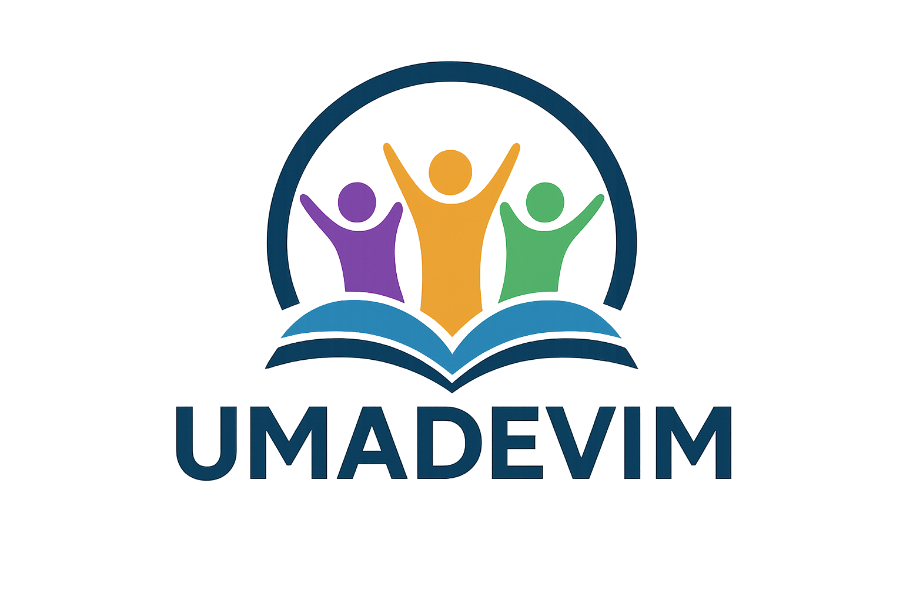
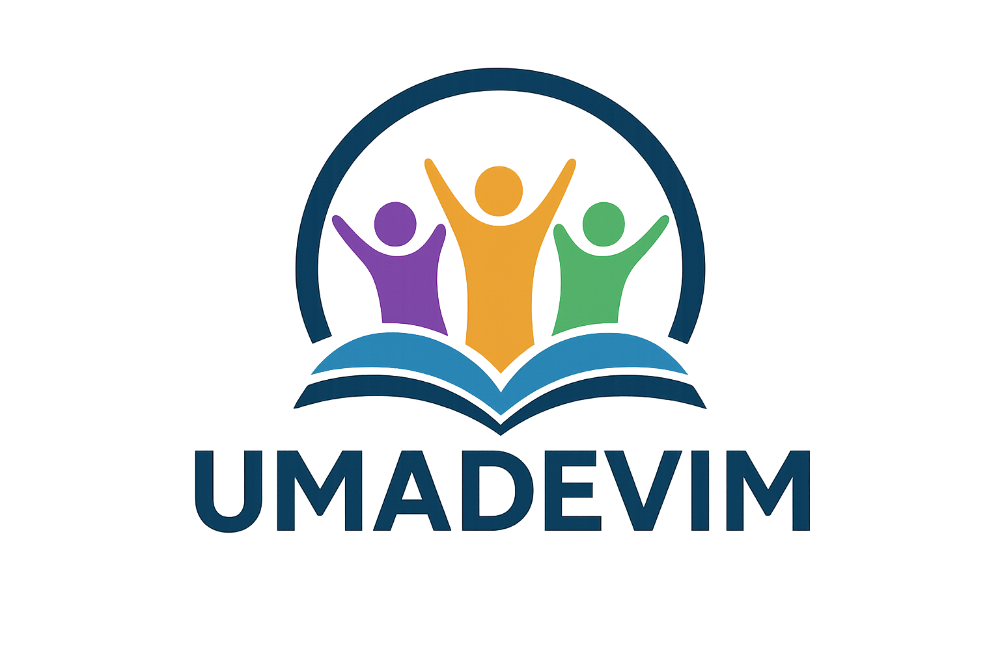

15 a 17 de Janeiro, Ginásio Castelinho São Luís
“DESPERTA-TE, FAZ-TE PRONTO!”
Sobre o Evento
Está chegando mais uma edição do Congresso de Jovens da UMADEVIM – União da Mocidade da Assembleia de Deus em Vitória do Mearim! Com o tema inspirado em 2 Timóteo 4:5 – “Desperta-te, faz-te pronto” – o congresso anual é um momento muito esperado pela juventude assembleiana da região. O evento tem como propósito despertar espiritualmente os jovens, encorajando-os a estarem prontos para servir ao Senhor com ousadia, dedicação e compromisso. Serão dias marcados por louvores fervorosos, pregações impactantes, comunhão entre os irmãos e um mover especial do Espírito Santo. Mais do que uma tradição, o congresso é um chamado para esta geração se levantar com autoridade e viver plenamente o propósito de Deus. Prepare-se para viver dias de renovação, crescimento e avivamento!
ONDE?
O Congresso de Jovens da UMADEVIM 2026 acontecerá em um espaço especial preparado para receber todos com conforto e segurança: o Ginásio Castelinho, localizado em São Luís do Maranhão. Um dos maiores e mais tradicionais ginásios da capital, o Castelinho será o palco onde Deus falará poderosamente aos corações de centenas de jovens reunidos com um só propósito: serem despertados e se fazerem prontos para a obra do Senhor.
QUANDO?
Reserve em seu coração e em sua agenda: 15, 16 e 17 de janeiro de 2026 serão dias separados por Deus para marcar a juventude da UMADEVIM de forma poderosa! Você não pode perder nenhum dia! Cada instante será único, cada culto uma oportunidade divina, cada palavra uma semente de transformação.
PATROCINADORES
 
